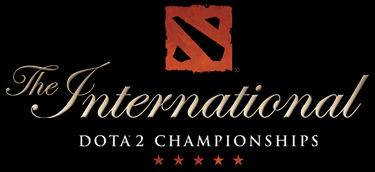
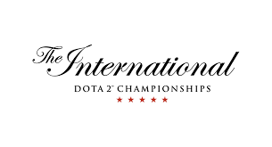

The International 1
Первый турнир The International состоялся в 2011 году в Кельне, Германия. Он собрал 16 команд и был признан одним из крупнейших событий в истории киберспорта.

The International 2
Второй турнир The International прошел в 2012 году в Сиэтле, США. Призовой фонд турнира составил более $1,6 миллиона, что в то время было рекордной суммой для киберспортивных соревнований.